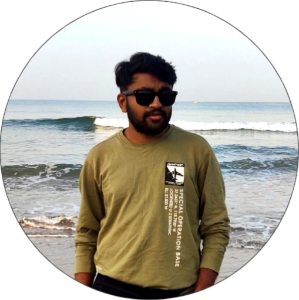

Email ID: darshanrdarshu2025@gmail.com
PH No: 7795164476
Intend to build a career with leading company and with committed and dedicated people,
which
will help me to explore myself fully and realize my potential. Willing to work as a key
player in
challenging and creative environment
NAME: DARSHAN R
Date of Birth: 25th March 2003
Father Name: BH.Raja